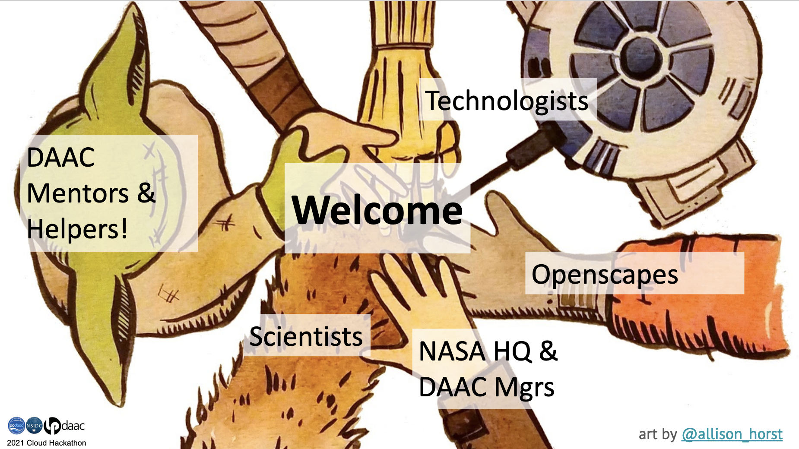

Schedule
The Cloud Workshop will take place virtually on December 12, 2021, from 8am-12pm CST (UTC-6) in AGU session SCIWS31.
We will engage primarily with this group and schedule via Zoom; see prerequisites & getting help.
Zoom links will be posted through AGU.
Workshop Schedule
| Time, CST (UTC-6) | Event | Leads/Instructors |
|---|---|---|
| 8:00 am | Welcome | Erin Robinson & Julie Lowndes, Openscapes |
| 8:05 am | NASA and the Cloud Paradigm | Catalina Oaida, PO.DAAC & Cyndi Hall, NASA |
| 8:20 am | Tutorial 0: Orientation and setup | Luis Lopez, NSIDC |
| 8:35 am | Tutorial 1: EarthData Search | Catalina Oaida, PO.DAAC |
| 9:05 am | Tutorial 2: EarthData Authentication | Aaron Friesz, LP DAAC |
| 9:20 am | Break | |
| 9:35 am | Tutorial 3: Direct S3 Access | Aaron Friesz, LP DAAC |
| 10:25 am | Tutorial 4: Cloud-non-cloud | Amy Steiker, NSIDC |
| 11:15 am | Q&A | All |
| 11:45 am | Closing (survey and next opportunities) | Catalina Oaida, PO.DAAC, Erin Robinson, Openscapes |
Welcome
- Welcome and Code of Conduct
- Please see the
NASA_CloudWorkshop_NotesGoogle Doc
- Please see the

Closing
Slides - Erin Robinson & Julie Lowndes
- Thank you
- Continued hacking on the cloud - one week. You will continue to have access to the 2i2c JupyterHub in AWS for one week following the Cloud Hackathon so you can continue to work and we all learn more about what is involved with migrating data access and science workflows to the Cloud. This cloud compute environment is supported by the NASA Openscapes project.
- Upcoming events - all virtual
- AGU Open science in action session - December 17, 2021. Talks and tutorials by Hackathon Mentors, among other leaders in open science.
- NASA Openscapes Champions Cohort - March-April 2022. Openscapes will lead a NASA Champions Cohort for 7 research teams. This is a professional development and leadership opportunity for scientists that use data from NASA DAACs and are interested in collaborative open data science practices and migrating their workflows to the cloud. Nominate your team by February 1.